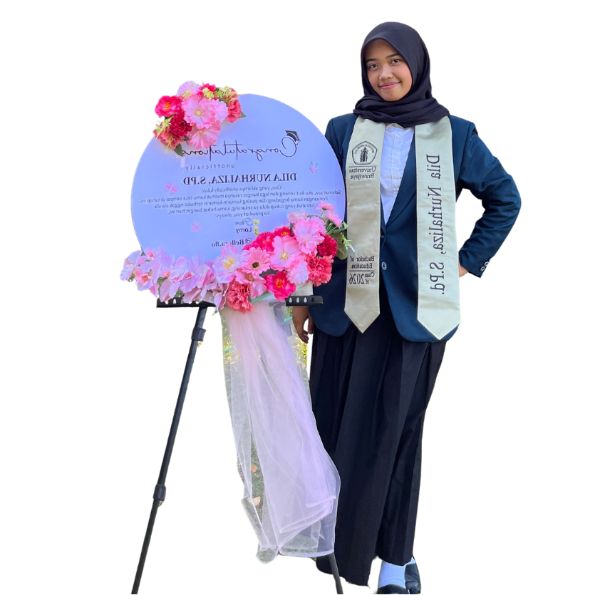
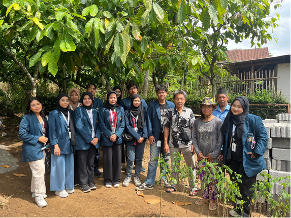
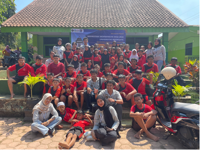
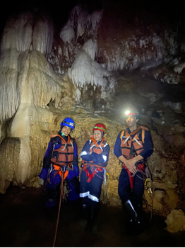

02
Education
Bachelor of English Language Education
Undergraduate thesis project
The Use of AI-Driven Feedback as a Strategy to Reduce EFL Learners’ Reading Anxiety with the Use of Reading Coach Website



